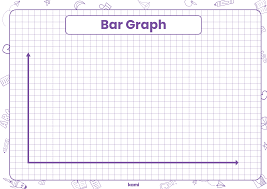

<html lang="en"></html>
<head>
    <meta charset="UTF-8">
    <meta name="viewport" content="width=device-width, initial-scale=1.0">
    <title>History</title>
    <link rel="stylesheet" href="../CSS_files/history_styles.css">
</head>
<body>
    <header>
        <h1>History</h1>
    </header>
    <main>
        <fieldset>
            <label  for="time_period"><strong>Pushups over the last:</strong></label>
            <select class="styled-button" id="time-period">
                <option value="last-week">1 Week</option>
                <option value="last-month">1 Month</option>
                <option value="last-6-months">6 Months</option>
                <option value="last-year">1 Year</option>
                <option value="all-time">All Time</option>
            </select>
        </fieldset>
        
        <br>
        <a href="dashboard.html">back to dashboard</a>
    </main>
    <footer>
        <br>
        <a target="_blank" href="https://github.com/braydenwatson1/cs_260_repository.git">Brayden Watson GitHub Repository</a>
    </footer> 
</body>
</html>